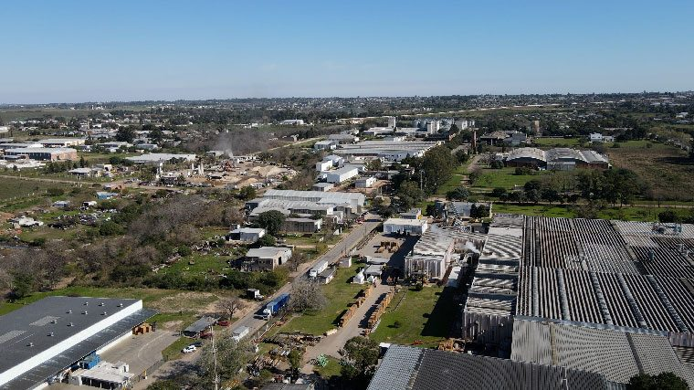
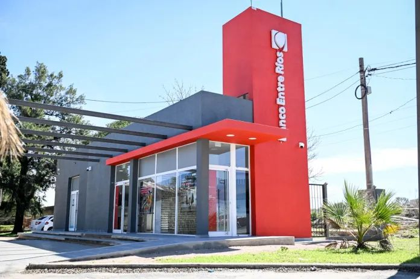
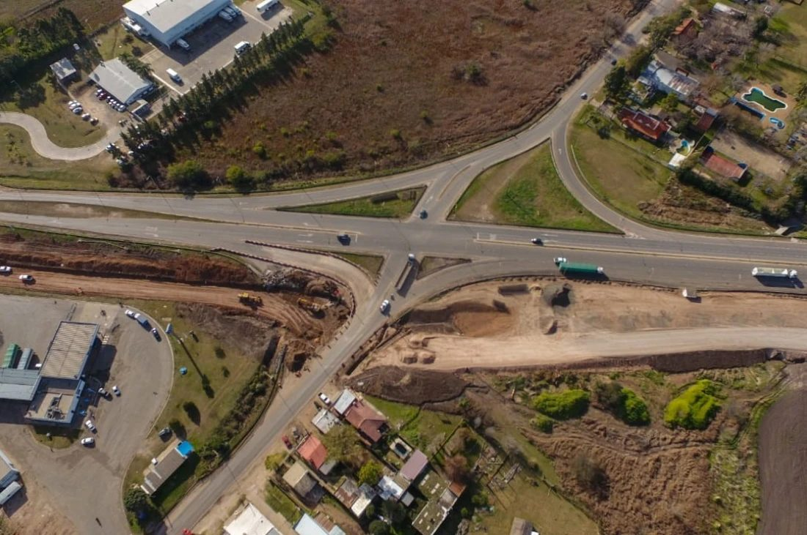
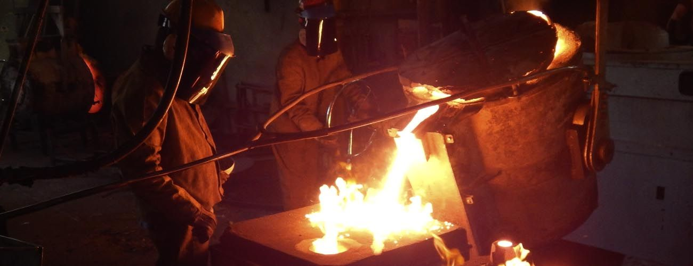
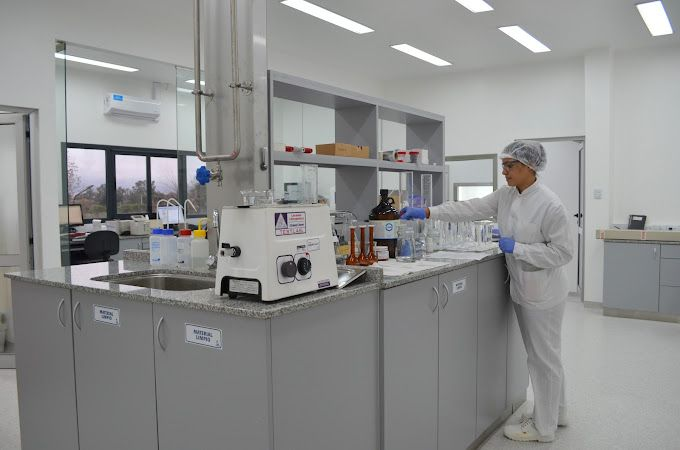
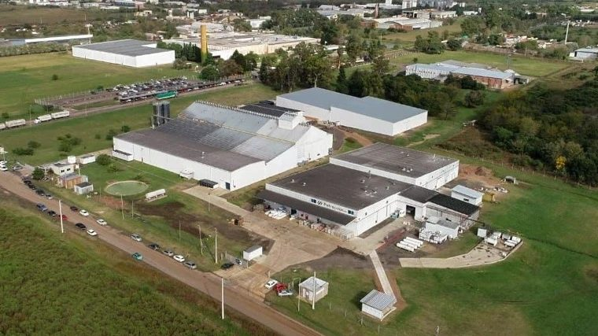

Municipales
Régimen de Promoción Industrial · Ordenanza N° 8560
- 100%de exención de tributos municipales durante los primeros 5 años
- 50%de exención durante los 5 años siguientes
- +5 añosadicionales en función de las inversiones
Municipalidad de Paraná · Entre Ríos
Lotes disponibles, beneficios para radicarse, servicios y empresas del parque. Calle Antonio Salellas, continuación de la Ruta Nacional 12.

Lotes
Cargando lotes…
Superficies con ≈ medidas sobre el plano de Catastro. Datos sujetos a verificación.
Beneficios
Para empresas que se radican por primera vez en el parque.
Régimen de Promoción Industrial · Ordenanza N° 8560
Promoción industrial de Entre Ríos
Lotes municipales
Financiación municipal: la Municipalidad ofrece convenios de pago para la compra del lote.
Estos valores corresponden a los lotes municipales. Los lotes privados en venta tienen el precio que fija su titular.
Los beneficios dependen del régimen vigente y de la aprobación de cada proyecto. Consultá las condiciones actualizadas con la Dirección del Parque Industrial.
Servicios

25cámaras de videovigilancia
24/7centro de monitoreo
Videovigilancia y centro de monitoreo propios del parque.
10.400paneles
7,38 MWppotencia instalada
12 GWhgeneración anual
Financiado al 100% con fondos propios del Municipio de Paraná. En proceso de puesta en marcha.
Acceso
Sobre calle Antonio Salellas, continuación de la Ruta Nacional 12. A 5 km de la Ruta Nacional 18, 7 km del Túnel Subfluvial y 8 km del centro de Paraná.
Ver en Google Maps
Empresas
Tocá un logo para ir a la web de la empresa.



Radicación
Los lotes municipales se adjudican a proyectos de producción industrial. También pueden autorizarse, de forma excepcional, empresas de servicios a la industria.
La información que presenta la empresa se mantiene en reserva.
También: cerco perimetral olímpico de 2 m, playas de carga y estacionamiento pavimentadas, iluminación interior del lote. No se permite vivienda. La Comisión Municipal de Desarrollo puede autorizar excepciones según el proyecto.
Marco normativo: Ordenanza N° 8560 (Promoción Industrial), Decreto N° 1263/2013, Decreto N° 254/1978 y Ordenanza N° 10117 (Distrito EUPI). Resumen informativo: rige el texto de cada norma.
Espacio de articulación entre el Ejecutivo municipal, el Concejo Deliberante y las empresas radicadas. Interviene en adjudicaciones, promoción industrial y planificación del parque.
Asociación de Empresas del Parque Industrial: más de 40 industrias asociadas. Tiene un portal de empleo que conecta postulantes con las empresas del parque.
Contacto